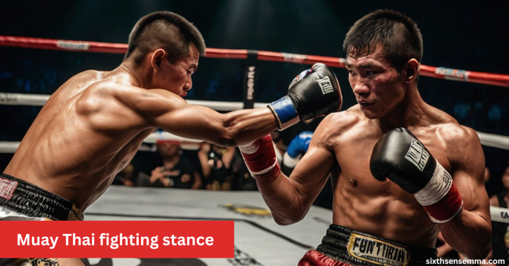
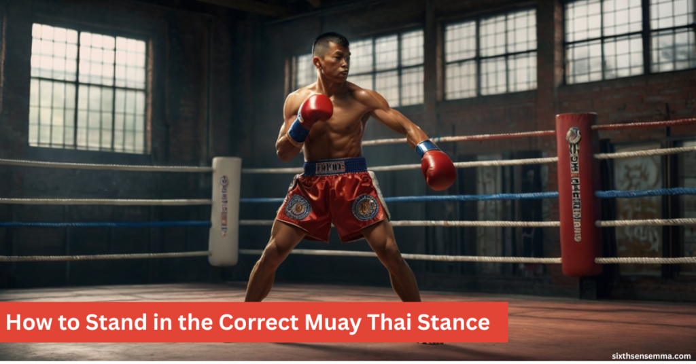
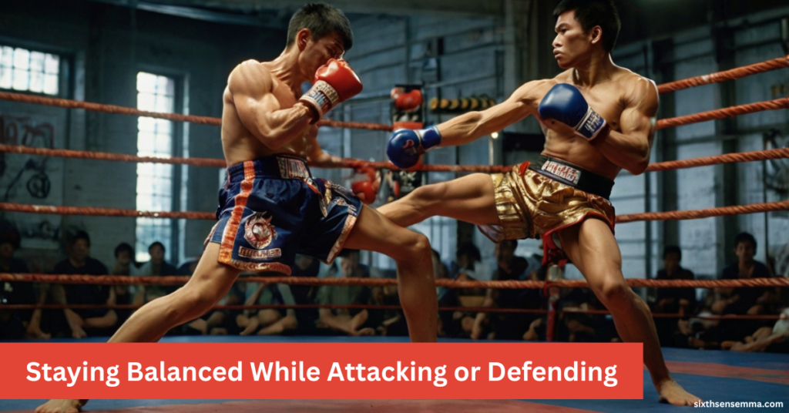

Muay Thai Fighting Stance Training Easy Drills to Improve Your Form

The Muay Thai fighting stance is a foundational position every practitioner must master to maintain balance and mobility. A proper body alignment with hands protecting the head and feet spaced correctly ensures readiness for both attack and defense. This martial art emphasizes a square stance that allows better use of the eight limbs for powerful strikes while keeping the fighter less vulnerable.
Basic Purpose of the Stance
The Muay Thai fighting stance serves as the solid base that supports all movement for a fighter.At Sixth Sense MMA, the Muay Thai fighting stance is the starting point for every studentThe Muay Thai fighting stance serves as the solid base that supports all movement for a fighter. It is essential for delivering a strike or blocking an attack while preparing to counter quickly. A strong, balanced body keeps you ready and stable, which is crucial for generating power through your hips and legs.
This foundation allows you to maintain control over your actions, making your punches and kicks the fastest and most effective. Without a proper stance, you risk becoming off-balance and your strikes might turn ineffective. From personal training, I’ve found that focusing on keeping the body steady makes all other techniques flow naturally.
Why It’s the First Skill You Need
In Muay Thai, beginners are always taught to stand with a strong stance from day one because it builds a solid foundation for the entire sport. A weak or unstable stance leads to poor movement, slow reactions, and less effective strikes. Coaches constantly emphasize that good form early on helps fighters move, defend, and launch attacks more confidently.
From my own experience, developing the right stance at the start makes training faster and safer, especially during sparring sessions. It shapes how you progress in the sport by teaching your body to respond correctly under pressure. Without this skill, you risk falling behind in technique and reaction time.
Stance as the Start and End of All Movements
In Muay Thai, every offensive or defensive move starts and ends with the stance. After throwing a punch or kick, fighters quickly return to this position to stay protected and ready for what’s next. The stance acts like a home base, providing consistency and allowing for faster, quicker reactions.
Mastering this helps you link combinations smoothly, as you can easily strike, then reset to prepare for the next step. From my training, I noticed that keeping the stance as your center point improves timing and control in every exchange.
How to Stand in the Correct Muay Thai Stance

Standing correctly in the Muay Thai stance starts with placing your feet about shoulder-width apart. Your knees should be slightly bent to help maintain balance. The lead foot points forward, while the rear foot rests at an angle with the heel slightly lifted to allow quick pivots.
Keep your hands up around eyebrow level, with elbows tucked in to protect your body. Your chin should be tucked down, and your spine kept straight. Your hips are slightly angled to reduce the target size and improve posture. This setup allows for quick movements, a solid defense, and strong counterattacks. From practicing this myself, I find this posture makes a big difference in staying ready and balanced during a fight.
Foot Placement and Weight Balance
| Aspect | Foot Placement | Weight Balance |
|---|---|---|
| Definition | The position and angle of your feet in your stance | How your body weight is distributed between both legs |
| Purpose | Provides a stable base and directional control | Increases mobility, reaction speed, and balance |
| Lead Foot | Slightly pointed forward to support stance and movement | Helps maintain even weight for quick offensive transitions |
| Rear Foot | Angled outward with the heel slightly raised for quick movement | Allows smooth backward movement and fast defense |
| Knee Position | Slightly bent to support foot positioning and flexibility | Helps adjust and balance weight efficiently |
| Avoids | Poor stance, incorrect angles, limited movement | Feeling stuck, flat-footed, or slow reactions |
| Tactical Role | Controls base and direction of attacks and defense | Supports fast transitions between offense and defense |
| Overall Benefit | Strong, steady foundation for strikes and defense | Light, responsive footwork and better movement timing |
Hand, Elbow, and Shoulder Position
| Body Part | Position/Instruction | Purpose/Benefit |
|---|---|---|
| Hands | Keep near eyebrows, palms slightly inward | Maintains high guard and readiness |
| Elbows | Stay close to the body, not flared out | Protects ribs and closes body openings |
| Lead Shoulder | Slightly turned forward | Shields chin and preps for quick jab |
| Upper Body | Relaxed but protective stance | Reduces tension, improves movement |
| Punching | Hands stay ready for fast strikes | Enables quick punches with minimal energy loss |
Posture, Chin, and Hip Alignment
Always tuck your chin down to protect your chest and avoid being exposed. Avoid leaning too far forward or backward; keep your back straight and relaxed. Your hips should be angled around 45 degrees to the opponent, making you a smaller target.
Proper alignment here improves balance and movement, allowing better power transfer in your strikes. From training, I’ve noticed that this angle helps maintain control and keeps you stable while attacking or defending.
Orthodox vs Southpaw: Which One Is Better for You?
| Feature / Aspect | Orthodox Stance | Southpaw Stance |
|---|---|---|
| Lead Hand & Foot | Left hand, left foot forward | Right hand, right foot forward |
| Dominant Hand Placement | Power (right) hand at the rear | Power (left) hand at the rear |
| Best For | Right-handed fighters | Left-handed fighters |
| Commonness | Most common stance worldwide | Less common, can be harder to read |
| Angle Advantage | Easier against other orthodox fighters | Natural angle advantage vs orthodox opponents |
| Counter Training Need | More material and sparring partners available | Fewer training partners, more surprise element |
| Footwork Direction | Circles away from opponent’s power side (left) | Circles away from opponent’s power side (right) |
| Typical Challenges | Struggles when facing experienced southpaws | Needs extra footwork training vs orthodox angles |
| Used By Famous Fighters | Buakaw Banchamek, Saenchai | Samart Payakaroon, Lerdsila |
| Switching Flexibility | Easier to switch to southpaw for drills | Can switch to orthodox, but requires practice |
Meaning of Orthodox and Southpaw Stance
The traditional position in Muay Thai is with the left foot front., which is common for right-handed fighters. The southpaw is the opposite, with the right foot leading, often used by left-handed people.
The main difference is in positioning and how you defend and attack. Orthodox fighters typically use their stronger right side for power jabs and kicks, while southpaws mirror this with the left. Understanding your stance helps you better read your opponent and plan your moves.
Choosing Based on Strength and Comfort
Most fighters choose their stance based on their dominant hand or leg. If you’re right-handed, the natural choice is the orthodox stance, placing your strong hand in the rear to throw more powerful strikes.
The right stance feels balanced and comfortable when moving, and you can always try both to see what best supports your mobility and reaction time. In my early sessions, testing both options helped me find the most effective rhythm for my own movement and timing.
Can You Switch Stances Later in Training?
Yes, fighters can learn both stances and switch stance during fighting to add versatility. I’ve attempted this in my own training, and it can be useful, but only after your main stance feels solid and natural.
Switching too early without mastering one side can lead to confusion, bad habits, and a weaker defense. It’s better to build strong basics first before adding the extra layer of movement and coordination needed for stance switching.
Common Stance Mistakes and How to Fix Them
Many beginners often struggle with balance due to poor foot spacing, flat feet, or leaning too far forward or backward. Another common mistake is dropping the hands or tensing the upper body, which creates openings for strikes and weakens defense and movement.
To fix these mistakes, focus on proper foot distance, stay relaxed yet alert, and maintain correct hand positioning and upright posture. Practicing regular drills, especially mirror practice, helps correct bad habits over time and builds a more stable stance. From personal practice, small adjustments done consistently made a noticeable difference in my training flow.
Poor Foot Spacing and Balance Issues
- Avoid a stance that is too wide — it reduces mobility.
- Avoid a stance that is too narrow — it makes you unstable.
- Ideal Position: Feet shoulder-width apart.
- Toes should point slightly outward or slightly forward.
- Knees should remain slightly bent for flexibility and quick movement.
- This stance improves balance and allows smooth weight shifts between legs.
Low Hands or Over-Tension in Guard
Two common errors are letting your hands drop or clenching them too tightly. Dropped hands expose your face, and tight muscles can slow your response time, especially during contact.
Keep your hands up, elbows tucked, and arms relaxed but ready. I learned to train with a balance—alert but loose reducing tension while staying sharp in defense. This adjustment helped improve both speed and stamina in my sparring.
Over-Leaning Forward or Backward
In my early Muay Thai sessions, I learned the hard way how leaning too far forward or too far back throws everything off balance. It not only limits your power, but increases the risk of getting hit or even falling mid-strike. A slight bend in the spine might feel natural, but keeping it straight, with your head over your hips and back leg grounded, makes a huge difference in stability and defense. Most new fighters don’t realize how their posture puts their entire stance under pressure. The right corrections — like using a mirror or slow shadow drills — really helped me improve and protect my balance in the ring.
Easy Drills to Practice Your Stance
When I started practicing my Muay Thai stance seriously, I realized that doing simple drills daily built strong habits that stuck in actual fights. One of the best exercises is the walking drill — step forward and backward while keeping your foot alignment sharp and your posture balanced. This exercise helps you get better control and educates your body to remain flexible and prepared under duress. This exercise helps you get better control and educates your body to remain flexible and prepared under duress. Shadowboxing in front of a mirror is also key; it lets you spot and fix mistakes in real time, especially how you return to stance after a strike.
Walking in Line for Foot Control
One drill that changed how I move in my Muay Thai stance is the walking in a straight line technique. You stand in position and walk forward and backward, making sure your feet stay aligned and evenly spaced. This drill trains your body to move while keeping your base intact, which builds the habit of keeping good posture even while moving. Over time, it sharpens your balance and coordination, both crucial for reacting quickly without breaking form.
Shadowboxing with Balance Focus
When I started shadowboxing with full attention on how my body returns to stance after each strike, everything changed. Instead of just throwing random punches, I focused on clean footwork, tight guard, and upright posture. This kind of practicing doesn’t just sharpen technique — it builds muscle memory that becomes automatic in real sparring. With time, each move felt smoother, and I stayed grounded no matter how aggressive my combinations were.
Use a Mirror to Self-Correct Form
Every time I shadowbox in front of a mirror, I catch things I’d never notice otherwise — from uneven foot angles to wrong hand height or sloppy elbow position. This kind of real time visual feedback helps me correct the small details before they turn into bad habits. Watching myself move also keeps my stance sharp and lets me build better awareness of how I look under pressure, which really helps when I’m training alone and want to fix things early.
How Fighters Use Their Stance in Real Matches
In real Muay Thai matches, a fighter’s stance is never static it’s active, always adjusting with every movement. At a high level of competition, professionals know that staying balanced is what allows them to shift seamlessly between attacking, defending, and countering. A proper stance gives them control over distance, timing, and power, especially when facing an opponent’s unusual reach, speed, or fighting style. I’ve seen how top fighters tweak their form mid-fight to match rhythm and stay ahead. It serves as the unwavering basis for all astute ring adjustments.
Staying Balanced While Attacking or Defending

In professional fights, the secret to clean technique is keeping your stance under constant control. Skilled fighters know how to shift their weight, pivot, or step without breaking their base, even during rapid punches, kicks, or blocks. What I’ve learned through training is that staying balanced keeps you ready to counter right after an attack and that makes all the difference in fast exchanges. A good stance isn’t just about defense or offense; it’s the glue that holds everything together.
Adjusting to Opponent’s Reach or Style
Smart fighters always adapt their stance depending on their opponents. If someone’s taller, I drop to a lower level to stay under their punches I sharpen my defense and change my angle to generate space against aggressive forwards.. These small changes help me manage distance and keep my timing tight, whether I’m attacking or waiting for the right moment to move. Every matchup teaches me how flexible my stance has to be to stay in control.
Examples from Professional Fighters
Top fighters like Buakaw and Rodtang show how a solid stance becomes a real advantage. Buakaw’s strong, grounded base makes his kicks feel like bricks, while Rodtang’s forward-heavy pressure keeps opponents on edge. Watching these pros in action gave me insight into how they stay in perfect balance, even when the fight pace gets wild. They know how to adjust in different fights, and that awareness comes straight from smart training and years of studying their own movement.
Who We Are
Sixth Sense MMA is a professional martial arts training center dedicated to helping students master the art of Muay Thai With a strong focus on fundamentals especially the Muay Thai fighting stance we provide structured, high-quality training for all experience levels.
Our coaching team includes experienced fighters and certified instructors who believe in building a strong foundation through disciplined stance work, proper technique, and functional conditioning. Whether you’re training for competition or personal growth, Sixth Sense MMA delivers real skills and real results in a supportive, focused environment.
Get in Touch With Sixth Sense MMA
Have questions about the Muay Thai fighting stance or want to train with us? Whether you’re a beginner or an experienced fighter, we’re here to help you level up. Click the button below to contact us directly let’s talk training.
Customer reviews
“Training at Sixth Sense MMA has completely changed my Muay Thai game…”
— Ali R.
Ali noticed real improvements in his movement and control after just a few weeks of focused stance training with our coaches.
“I was a complete beginner, but the coaches broke down the Muay Thai fighting stance…”
— Zainab K.
Zainab started with zero experience, but our step-by-step teaching helped her feel confident and capable from the first session.
“Professional environment, top-tier coaching, and real attention to detail…”
— Usman M.
Usman appreciated the high-level coaching and focus on technique that makes Sixth Sense MMA ideal for serious Muay Thai athletes.
Why Choose Sixth Sense MMA?
At Sixth Sense MMA, we specialize in Muay Thai fundamentals especially perfecting your fighting stance. Whether you’re a beginner or an experienced fighter, we focus on real technique, real progress, and real results.
Expert Coaches
| Train under experienced Muay Thai professionals who focus on your stance, footwork, and fight IQ |
Beginner to Pro Friendly
Whether you’re just starting or sharpening skills, we tailor every session to your level.
Stance-Focused Training
We go beyond basic drills. Our unique stance work builds speed, balance, and control.
Supportive Community
Join a team of like-minded fighters who push and support each other to improve.
FAQ’s
A balanced stance is critical during clinching exchanges. It allows you to stay grounded while delivering knees or resisting off-balancing attempts. Without a firm stance, opponents can sweep or pull you down easily. Proper foot positioning improves control and leverage in the clinch.
The Muay Thai stance can be useful in MMA, especially for striking. However, it must be adapted to prevent takedowns from wrestlers. Fighters often lower their base and angle their stance in MMA. Combining Muay Thai with grappling awareness enhances effectiveness.
Bouncing adds rhythm, deception, and better reaction time. Fighters who stay flat prioritize power, defense, and energy conservation. Both methods have strategic benefits depending on the opponent and style. The key is staying light on your feet either way.
Yes, it’s designed to check and absorb leg kicks efficiently. The slightly raised rear heel allows fast lifting of the shin for blocks. Proper foot angle and spacing are essential to avoid damage. A sloppy stance leaves legs open and unprotected.
Fighters slightly shift weight forward to close distance safely. Balance is still maintained to avoid falling into the opponent. Good stance supports powerful delivery and quick recovery. The goal is to strike and return to guard seamlessly.
Shorter fighters may need a more aggressive, forward-leaning stance. This helps them close distance and land inside strikes like elbows or knees. Staying too upright keeps them out of range against taller opponents. Pressure and compact movement are to their advantage.
The rear foot provides mobility, balance, and power generation. A slightly lifted heel makes it easier to pivot or check kicks. It also enables forward and backward movement without delay. Weak rear foot control slows your reaction time.
Your stance should be reinforced in every training session. It’s not just a starting point—it’s part of every move you make. Drills like shadowboxing, line-walking, and footwork can refine it. Regular practice turns stance into second nature.
Train with us in Coppell
The first class is free. Shorts, a t-shirt and a water bottle. We lend the rest.
Book a free class